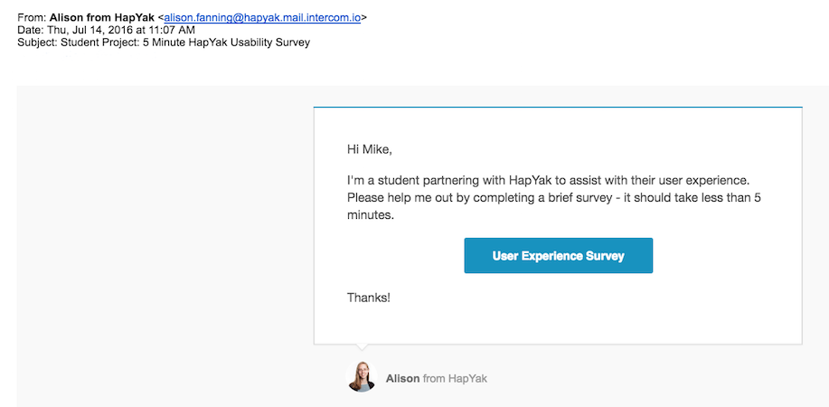
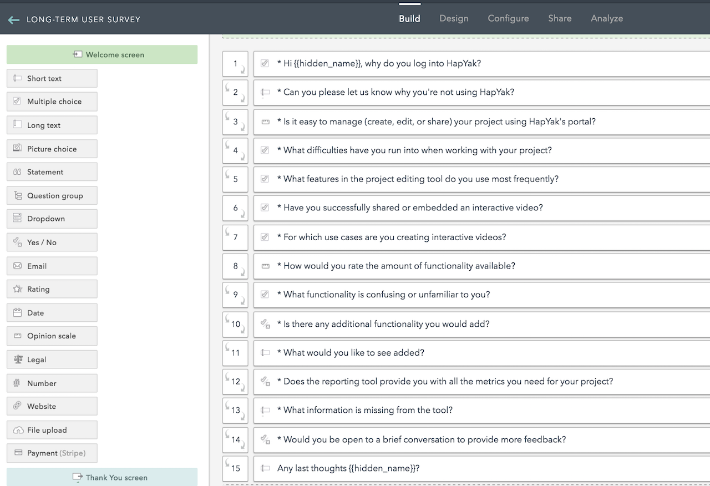
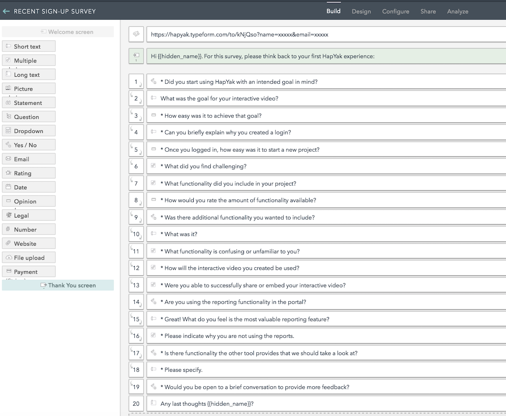
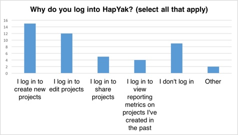
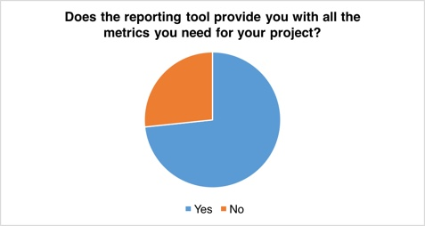
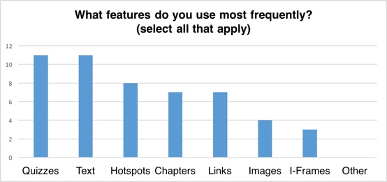

HapYak provides a platform for organizations to add interactivity, such as quizzes, links, and chapters, to videos. As viewers interact with these elements, data is recorded and reported back to the organization allowing them to better understand their audience.
The Challenge
As part of a six-week partner project with Startup Institute, HapYak asked us to develop and implement a plan to gather feedback from users of their video editing/augmentation portal (these users will hereafter be referred to as editors) and present the findings to the team.
HapYak wanted to be sure that new editors weren't overwhelmed by the extensive toolset when first logging in. Specifically, they wanted to make sure they could easily:
- Develop a goal for creating an interactive video (if they didn't already have one).
- Build an interactive video to achieve that goal.
- Share the video with viewers.
- View reports showing metrics based on the goal.
Additionally, they wanted to better understand their existing editors. In particular, they wanted to:
- Confirm the user personas.
- Understand how they used (or wanted to use) the portal.
- Understand any challenges they had using the portal.
The research results would be used to help HapYak develop and prioritize the list of product improvements and create a better experience for their customers.
The Approach
We started by spending some time in the portal, using the toolset to add interactive components to a video. As we were new to the portal ourselves, we took notes about our experience and resulting product questions.
We then spoke with the HapYak team to learn more about their customer base. They believed that editors fall into four main personas, each with their own goals and commonly used features:

Once we had an understanding of the portal and the customer base, we began designing a process that would allow us to gather feedback from both new and existing editors across each of the four personas.
Existing Editor Feedback
For existing editors, we decided to conduct a survey. We divided these editors into two groups, long-term users and recently signed-up users, and asked them questions around each of HapYak's respective goals. We added logic to both surveys so people only saw questions applicable to them.
Long-Term Customer Survey
This survey was sent to all video editors who had signed up to use HapYak more than 30 days ago and had been in the portal more than once. If they were active in the last 30 days, the survey message was set to appear in the portal the next time they logged in. If it had been longer than 30 days they received an email.

The survey itself focused on why and how the editor uses the portal.

Recent Sign-Up Survey
This survey was sent to all video editors who had signed up to use HapYak in the last 30 days. If they were active in the portal within the last 15 days, the survey message was set to appear in the portal the next time they logged in. If it had been longer than 15 days they received an email.
The survey itself focused the editor on their experience the first time they logged into the portal (when they were a new user).

New Editor Feedback
To learn more about the experience of new editors, we decided to conduct in-person focus groups with people who had never used the platform before. We held four test sessions, one for each user persona, and ran participants through the following procedure:
- Provided an intro to HapYak and the test we were conducting.
- Showed them the six-minute instructional video that appears in the portal the first time a user logs in.
- Asked them to take fifteen minutes to play around with the tools and try to complete the goal associated with their user persona.
- Led a group discussion with follow up questions on the task.
- Provided a debrief on the purpose of the testing.
During the portion where participants were playing around with the tools we had one researcher paired up with each participant. Participants were asked to talk through their actions and thought processes as we took notes.
The Results
We only had a couple of weeks to collect data, so we didn't receive as many responses as we would have liked, but now that the surveys are in place we hope HapYak will continue using them as a means of collecting user feedback on an ongoing basis.
Below is a sampling of our results and analysis. We provided a presentation to the HapYak team with all of our results including a full slide deck and all of our focus group notes.
Recent Signup Survey
We only received two responses to this survey which we concluded was not enough data to analyze. Our hypothesis is that new users either aren't bought in enough on the product to complete a survey or are inundated with messages the first couple of times they enter the portal. Further testing would be necessary to confirm.
Long Term Customer Survey
We had 30 users respond to this survey. Here are the highlights of the results including our analyses and recommendations:

9 out of 30 respondents indicated that they don't log into the portal. This was a lot higher than we anticipated - we didn't expect users who don't use the service to take the survey.
We asked these users why they don't log in and the responses varied from being unsure about how to leverage the platform at their organization to not being on the project anymore to not feeling like they had the ability to test without making a purchase.
Our recommendations to the HapYak team for this group included:
- Follow up with these users to try and re-engage, given that they took the time to complete the survey.
- Educate them on the portions of the platform that can be used for free.
- Provide existing blog post and e-book resources that discuss how to leverage the platform within their organization.

11 of the 15 respondents who were asked about reporting tools indicated that the reporting tools provided them with the metrics they need for their projects. On the surface this seemed to indicate that the reporting tools are adequate and shouldn't be high on HapYak's priority list.
However, we noticed that of those 11 people, only 1 had indicated that they log into the portal specifically to use the reporting tools and of the 4 people who indicated the tools don't meet their needs, 3 of them log in specifically for that purpose.
Our conclusion was that of this sample group, the reporting functionality isn't a high priority but if they want to retain more users interested in reporting, they will need to improve the tools.

One of our goals was to understand how editors were using the portal. In addition to asking why users logged in, we also asked which features they used most frequently.
We found that quizzes, text and hotspots were the most commonly used items by our participants. This may have been skewed by the fact that majority of participants indicated their videos were for classrooms or corporate trainings.
However, given that quizzes were one of the most used features and, according to our focus group testing (see below) one of the most confusing features, we recommended a redesign of the modal window used to create and edit quizzes.
New Editor Focus Groups
We held four focus groups with three participants each. Here were the common trends we saw across all personas:
- The tutorial video didn't hold viewers' attention. As a result, users still had questions about how to use the tools even after watching it.
- Users were confused that annotations are added immediately when clicking icons. Everyone clicked the icons just to explore functionality and then didn't understand where all of the annotations in their video came from.
- There was confusion around some of the advanced features. Users wanted these to be hidden or at least listed below the basic functionality within a menu.
- Users had a lot of trouble implementing quizzes:
- They often added an input field when they meant to add a multiple choice response.
- They forgot to indicate or couldn't figure out how to indicate the correct answer.
- They couldn't find how to save.
Based on these trends, we recommended that HapYak create an embedded tutorial per persona that gives users hands-on practice with the tools (with an option for replay). We suggested that the tutorial encompass portal usage - from video creation to video sharing - and highlight functionality specific to the persona. Additionally, we advised the team to review the iconography, quiz editing window and placement of advanced functionality to make the experience more user friendly for first time editors.
Conclusion
HapYak states it takes about three projects to get comfortable with the portal and based on the user feedback we received we believe that's true. From the long-term editors we heard that the majority of people felt that the portal was generally easy to use, but from our new editors we heard that it would take a while to get comfortable using the tools. Our hypothesis is that our long-term editors have already passed that three project threshold, but we would need to do additional research to confirm.
Our recommendation to HapYak was to prioritize enhancing the tutorial and a variety of UX improvements such as iconography and layout to ease the onboarding experience and cut the time it takes to make a user feel comfortable with the tools.